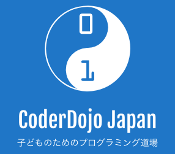

CoderDojo とは CoderDojoは、7〜17歳の子どもを対象にしたプログラミングクラブ（道場）です。 CoderDojo の活動は2011年にアイルランドで始まり、子どもにより良い環境で、自発的に、なおかつ無料でプログラミングに触れる機会を提供するために始まりました。 世界では110カ国・1,900の道場、日本では全国に178以上の道場があります。（2019年3月時点） CoderDojoでは開催場所や参加者を次のように呼びます。 プログラミングする場所（開催場所）: Dojo（道場） 参加する子供たち: 忍者 サポートする大人たち: メンター Dojoの運営者: チャンピオン CoderDojo Foundation は世界中の CoderDojo コミュニティのために行動します。 CoderDojo Foundation CoderDojo の公式の日本支部が「一般社団法人 CoderDojo Japan」となります。 国内の Dojo がより活発になるよう裏側から支援していき、また、世界の中の日本として、国外の Dojo ともより一層連携していくことを目的として活動します。 CoderDojo Japan CoderDojoガイダンス CoderDojo Nada とは CoderDojo Nada は CoderDojo の理念に共感したメンバーにより発足したボランティアグループです。 2018年3月より、ほぼ毎月 CoderDojo を開催します。 CoderDojo Nada 独自の運営方針として、参加者を中学生・高校生だけを対象とさせていただきます。 「子供も大人もプログラミングをたのしむこと」を基本的な指針としていきたいと思います。 「プログラミングスクール（学校）」ではありません。カリキュラムもありません。先生もいません。 忍者は自分でやりたいことを見つけて、自分で進めていきます。メンターは横からサポートします。 「子供と大人が参加するプログラミングを楽しむクラブ」といった認識で参加いただけたらと思います。 CoderDojo Nada は CoderDojo Foundation および CoderDojo Japan に公式のDojoとして登録されています。 CoderDojo Nada で利用できる教材 プログラミング未経験の人でも、学習していけるような教材を用意しています。 以下の教材を無償で利用することができます。 種別 内容 対象者 Web学習サービス progate プログラミング初心者の方 Web学習サービス IT学習プラットフォーム DIVER Learnings プログラミングの基本がわかる方 各種書籍 PHP(Web)、Scratch、機械学習、Unityなど やさしめの書籍が多いです CoderDojo Nada でサポートするプログラミング言語 プログラミング言語 サポート内容 JavaScript Canvas、8x9Craft、enchant.js、D3.js、その他、ゲーム、Webサイト作成など Python Pygame、NumPy、AI(ディープラーニングの初歩)、その他、ゲーム作りなど C, C# Unity、arduino、その他、ゲーム作りなど Java Webアプリ、バッチアプリなど パソコンの基本操作およびローマ字が理解できることが前提となります。 勉強していく意欲さえあれば、全くの初心者でも構いません。 その他の言語でも、サポートできるメンターの応募があればサポート可能です。 サポートしてほしい言語や内容を申し込みの際、アンケートにご記入ください。 Dojo（開催会場） 現在はオンラインでの開催になっています(2022年2月現在) 深江会場：Nilquebe（ニルキューブ） 参加方法 参加費用は無償です。 Connpass にユーザー登録をし、上の「このイベントに申し込む」から参加登録を行ってください。 facebookユーザ、twitterユーザと連携することもできます。 携帯電話・スマホでPCメールからのメール受信を拒否されている方は、メールが届きませんので解除をしてください。 (「@doorkeeper.jp」「@coderdojo.com」の2ドメイン) 参加希望者が定員を上回る場合は抽選とさせていただきます。 参加希望者が定員に達しない場合でも、希望するプログラミング内容をサポートできるメンターがいなければ参加できない場合があります。 CoderDojo Nada 参加者同意書への同意のお願い CoderDojo Nada の参加者全員に「CoderDojo Nada 参加者同意書」に同意していただく必要があります。Coder Dojo Nada に参加いただく際に守っていただくべきルール、条件などを記載しています。「CoderDojo Nada 参加者同意書」はイベントページに記載しています。 必要な持物 無線LAN につなぐことができるノートパソコン(電源コードも忘れずに持参してください)。最近3〜5年以内に発売された、Windows や Mac パソコン。iPad などのタブレット、スマートホンだけでは参加できません。古すぎるパソコンでは学習できない場合がございます。 マウス（必要であれば） USB Type-CしかインターフェイスがないパソコンはHDMIまたはD-subに変換できるアダプタ 筆記用具（必要であれば） 書籍（自宅でプログラミングするときに見ている本があれば） その他、各自が作業に必要だと思うもの おことわり CoderDojo 当日は、イベントの内容の写真・ビデオ撮影をさせていただきます。撮影した内容は、Creative Commons ライセンスで再利用可能な状態で公開いたします。参加者は原則、写真撮影・ビデオ撮影 OK という認識でおります。 もしも写真撮影・ビデオ撮影が不都合のある方は事前に申し出てください。 メンターの募集について メンターとは Mentor (メンター)とは、英語で「指導者」という意味です。メンターは忍者 (生徒) のサポートをします。忍者に自発的にプログラミングを進めてもらえるように隣に寄り添ってサポートしていただきます。「答えを教える」のではなく、「調べ方を教える」か「問題を小さく分けてあげる」ようにしてください。 メンターに求められること メンターは CoderDojo Nada でサポートするプログラミングの基礎知識は必要です。でも、いっしょに勉強していくという姿勢があれば、入門書に目をとおした程度の知識でも構いません。 メンターの勉強会も適宜行っていく予定です。 忍者の子供たちから、教えられるということもしてください。(意外とよくあります) メンターとしての準備すること メンターとしての予習は原則として必要ありません。 忍者に質問されて、わかならければ、いっしょに考えて、調べてください。 メンターもプログラミングを楽しんでください 子どもたちに教えると同時に、自分自身が勉強し、楽しんでください。 勉強したことを他のメンターや忍者と共有してください。 発表時間には進んで発表をしてください。 メンター向けの勉強会も開催 メンター向けの勉強会も開催予定です。CoderDojo終了後、1時間程度を検討しています。参加は任意です。 初めてメンターをされる方 初めてメンターをされる方は、いろいろ不安に思われることもあるかと思います。そういう場合は、メンターとしてお申し込みされる前に、まずは ご質問・ご相談 ください。 CoderDojo Nada で初めてメンターをされる方は CoderDojo Nada で活動するメンターとして「CoderDojo Nada メンター同意書」に同意頂いた上で、メンバー登録をする必要があります。登録はこちらの メンター同意書および登録フォーム からお願いします。 今まで、一度もメンター経験のない方は、見学者としての参加をお願いすることがあります。 スポンサーや寄付のお願い CoderDojo Nada では、無料で運営するために、スポンサーや寄付を受け付けます。 会場に募金箱を設置します。 任意で募金をお願いします。（目安は 1回500円から1000円程度） 団体・法人スポンサーは、現物支給スポンサーと資金スポンサーがあります。現物支給スポンサーは会場、テクニカルなメンター、機材、Wifiアクセスといったモノやサービスを寄付するスポンサーです。当ページ、および CoderDojo Nada ホームページ上で、スポンサー様として、リンク、バナー広告などを掲載させていただきます。 寄付は、教材代、書籍代、印刷代、コピー代、備品代、その他、CoderDojoの運営にだけ使われます。 ※参加者が募金をすること、または募金をしないことが、CoderDojo Nada での参加者の抽選、および活動内容に影響することはありません。 CoderDojo Nada のスポンサー様 ニルキューブ様には開催会場と設備を無償で貸与していただいています。 さくらインターネット様には仮想サーバを無償で貸与していただいています。 プログラミングスクール８ｘ９様にもサポートしていただいています。 Web 学習サービスの progate様にもサポートしていただいています。 IT学習プラットフォーム の DIVER Learnings様にもサポートしていただいています。 お問い合わせ・連絡先 nada.hyogo.jp@coderdojo.com